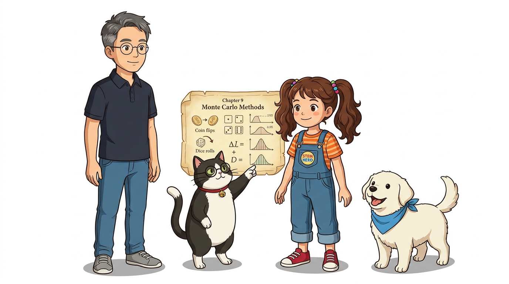
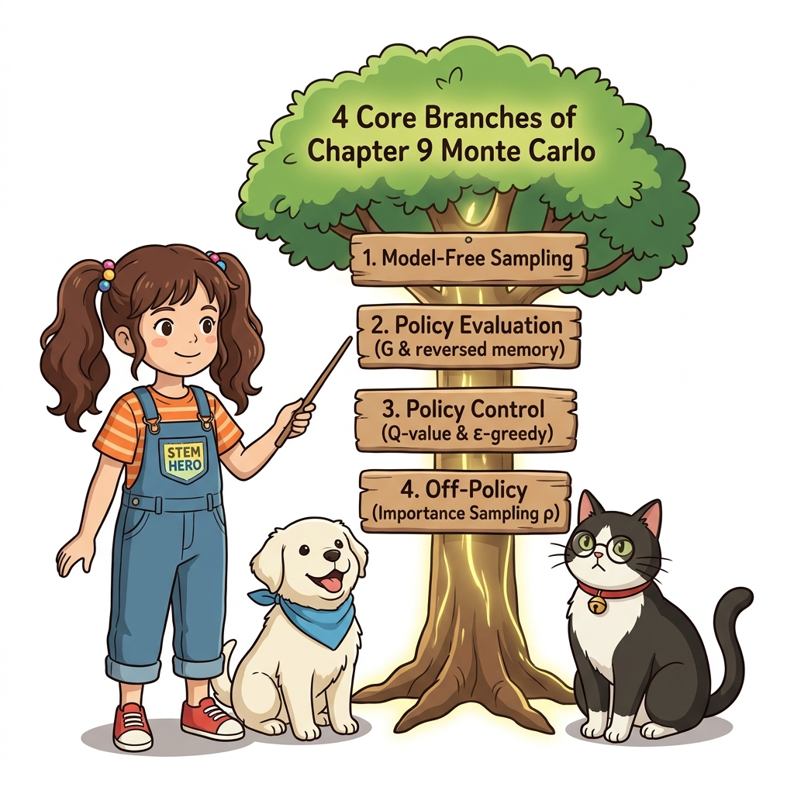
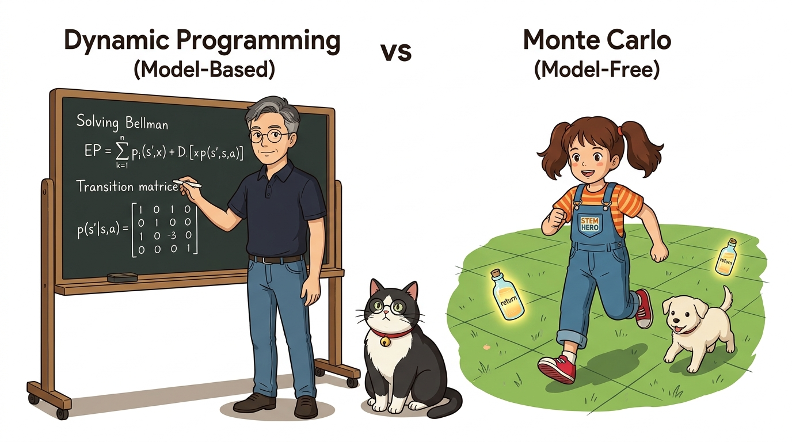

09.6 정리

그림 09-6-1 몬테카를로 정상에 올라 경험 학습의 전체 지도를 벅찬 감동으로 내려다보는 도로시, 지니, 토토환경 모델을 전혀 모르는 백지 상태에서도 오직 실제 부딪히며 얻은 경험만으로 가치 함수를 평가하고 최적 정책을 제어해낸 9장의 대장정을 총결산합니다. 실제 경험에 기반하여 환경의 전체 지도를 알지 못해도 가치와 최적 경로를 찾아낸 도로시처럼, 다음 장인 10장 TD법(시간차 학습)으로 나아가기 위한 몬테카를로식 통찰을 최종 복습해봅시다!
강화 학습에서는 에이전트가 주어진 환경에서 실제로 행동하고 거기서 얻은 경험을 바탕으로 더 나은 정책을 찾습니다. 환경과 에이전트의 이러한 상호작용이 강화 학습의 본질적 특징입니다. 이번 장에서 배운 핵심 기술은 몬테카를로법(Monte Carlo Method)입니다. 몬테카를로법을 이용하면 환경의 상태 전이 확률 행렬이나 보상 함수를 알지 못해도, 실제로 얻은 경험 데이터로부터 가치 함수를 근사적으로 구할 수 있습니다.
09.6.1 경험 기반 학습과 모델 프리 패러다임

그림 09-6-2 샘플링에서 시작해 역방향 평가, Q 함수 제어, 중요도 샘플링으로 뻗어나가는 몬테카를로 지식 나무몬테카를로법의 본질은 경험(Experience)에 의한 직접 학습입니다.
- 표본 평균과 큰 수의 법칙:
- 무수히 많은 에피소드를 반복하며 관측된 실제 누적 할인 수익 G의 표본 평균을 계산하면, 큰 수의 법칙에 의해 참 기댓값인 가치 함수 V(s)와 Q(s, a)에 오차 없이 정확히 수렴합니다.
- 무편향 추정 (Unbiased Estimation):
- 다음 상태의 불확실한 추정 가치에 의존(부트스트랩)하지 않고, 에피소드가 끝날 때까지 실제로 모은 참 보상들의 누적 할인 합 G를 사용하므로 추정치에 편향이 없습니다.
- 역방향 누적 연산 (
reversed(memory)):- 에피소드가 골 지점에서 종료된 후, 배낭에 담아둔 경험 버퍼를 뒤에서부터 거슬러 올라가며 점화식 G ← γ · G + R을 적용함으로써 중복 연산 없이 단 한 번의 순회로 모든 상태의 수익을 O(T)에 계산해내는 효율적인 파이썬 구현을 완성했습니다.
09.6.2 동적 프로그래밍(DP) vs 몬테카를로법(MC) 총괄 비교
동적 프로그래밍과 몬테카를로법의 구조적 차이를 정리하면 다음과 같습니다.

그림 09-6-3 환경 지도를 펼쳐놓고 연립방정식을 푸는 DP 거울과, 발걸음으로 미로를 직접 개척하는 MC 거울의 대비| 비교 항목 | 동적 프로그래밍 (DP) | 몬테카를로법 (MC) |
|---|---|---|
| 환경 모델 (Model) | 상태 전이 확률 p(s’|s, a), 보상 함수 r 필수 | 모델 불필요 (Model-Free) |
| 학습 원천 (Source) | 벨만 연립방정식의 수학적 전개 | 실제 에피소드 상호작용 경험 샘플 |
| 부트스트랩 (Bootstrap) | 사용 (다음 상태의 추정 가치 V(s’) 이용) | 미사용 (에피소드 완주 참 수익 G 사용) |
| 학습 단위 | 1스텝 상태 전이 기대치 일괄 계산 | 에피소드 완주 단위 (Episodic) |
| 적용 현실성 | 환경 모델을 아는 시뮬레이션에 국한 | 환경을 모르는 미지의 실세계 문제에 적용 가능 |
동적 프로그래밍은 환경의 완벽한 지도가 주어졌을 때 방정식을 풀어내는 방식인 반면, 몬테카를로법은 지도 한 장 없이도 직접 발을 내딛으며 지도를 완성해가는 방식입니다. 바로 이 점 때문에 몬테카를로법이 진정한 자율 강화학습의 출발점이 됩니다.
09.6.3 정책 제어: Q 함수, ε-탐욕, 지수 이동 평균의 조화
몬테카를로법으로 Q 함수를 평가할 수 있다면, 이어서 Q 함수를 이용하여 정책을 개선할 수 있습니다. 이 평가와 개선을 번갈아 반복하면 더 나은 정책을 얻을 수 있습니다.
[식 9.9] μ(s) = argmax_a Q(s, a)
[식 9.10] π(a* | s) = 1 - ε + (ε / |A|), π(a | s) = ε / |A|
[식 9.11] Q(s, a) ← Q(s, a) + α · (G - Q(s, a))
- 행동 가치 함수 Q(s, a)의 채택:
- 전이 확률을 모를 때는 상태 가치 V(s)만으로 다음 최적 행동을 선택할 수 없으므로, 환경 모델 없이도 크기 비교만으로 즉시 결정을 내릴 수 있는 행동 가치 함수 Q(s, a)가 정책 제어의 유일한 해법입니다.
- ε-탐욕 정책을 통한 탐색과 활용의 균형:
- 정책 개선을 완전히 탐욕스럽게 하면 조기 수렴으로 인해 미방문 상태가 생기고 좁은 경로에 갇히게 됩니다. 따라서 1 − ε의 높은 확률로 현재 최선의 행동을 활용하되, ε의 작은 확률로 무작위 탐험을 지속하도록 하여 최적해를 발굴합니다.
- 고정 학습률 α 기반 지수 이동 평균:
- 정책이 발전함에 따라 수익의 생성 분포가 계속 바뀌는 ‘비정상 문제’에 적응하기 위해, 균일 가중치(1/n)의 표본 평균 대신 최신 데이터에 큰 가중치를 부여하는 지수 이동 평균 점화식을 적용합니다.
09.6.4 오프-정책과 중요도 샘플링
에이전트의 정책은 역할 측면에서 볼 때, 대상 정책(Target Policy)과 행동 정책(Behavior Policy)으로 나뉩니다.
- 온-정책 (On-policy): 행동 정책과 대상 정책이 동일 (π = b). 자신이 뛴 발걸음으로 자신을 학습.
- 오프-정책 (Off-policy): 행동 정책과 대상 정책을 분리 (π ≠ b). 탐색은 행동 정책 b에게 맡겨 자유롭게 모험하게 하고, 대상 정책 π는 100% 최선의 탐욕 정책만을 순수하게 학습.
오프-정책에서는 행동 정책 b에서 얻은 경험 데이터를 바탕으로 대상 정책 π에 대한 기댓값을 계산해야 합니다. 이때 사용하는 통계적 도구가 바로 중요도 샘플링(Importance Sampling)입니다.
E_π[X] = E_b[ X · (π(X) / b(X)) ] = E_b[ X · ρ(X) ]
두 정책의 확률 비율인 중요도 가중치 ρ(x) = π(x) / b(x)를 각 표본에 곱해줌으로써 다른 분포에서 온 데이터를 목표 정책의 참 기댓값으로 완벽하게 보정합니다. 비록 두 분포가 크게 벌어지면 분산이 폭발하는 문제가 발생하지만, 분포를 가깝게 조율함으로써 안정적인 근사를 달성할 수 있습니다.
09.6.5 몬테카를로법의 한계와 10장 TD법(시간차 학습)으로의 가교
몬테카를로법은 모델 프리 강화학습의 신기원을 열었지만, 한 가지 결정적인 한계점을 가지고 있습니다.
그림 09-6-4 에피소드 완주를 기다리는 몬테카를로의 문을 지나, 매 스텝 실시간으로 학습하는 시간차 학습(TD)의 다리로 나아가는 도로시와 토토
- 에피소드 완주 필수 (Episodic 제약):
- 에피소드가 완전히 끝날 때까지 기다려야만 비로소 누적 할인 수익 G를 계산할 수 있습니다. 따라서 주식 거래나 로봇 제어처럼 에피소드가 끝나지 않고 영구히 지속되는 연속적(Continuing) 환경에서는 몬테카를로법을 적용할 수 없습니다.
- 높은 분산 (High Variance):
- 에피소드가 길어질수록 수많은 확률적 상태 전이와 행동 선택의 보상이 곱해지고 더해지며 누적 수익 G의 분산이 매우 커집니다. 분산이 크면 참 기댓값에 수렴하기 위해 수만 번 이상의 방대한 에피소드 표본이 필요합니다.
이러한 몬테카를로법의 한계를 극복하기 위해 등장하는 차세대 혁신이 바로 10장 시간차 학습(Temporal Difference, TD법)입니다!
10장 시간차 학습(TD)의 예고: “에피소드가 끝날 때까지 기다리지 않고, 단 한 걸음(1-Step)만 내딛어도 즉시 가치를 갱신할 수 있다면 어떨까요? 몬테카를로법의 ‘경험 샘플링(Model-Free)’과 동적 프로그래밍의 ‘부트스트랩(Bootstrap)’을 절묘하게 융합한 시간차 학습의 기적이 다음 장에서 펼쳐집니다!”
09.6.6 핵심 정리: 9장 몬테카를로 완주 3대 금자탑
그림 09-6-5 몬테카를로 3대 금자탑을 세우고, 찬란하게 열린 10장 시간차 학습의 황금 문을 향해 당당하게 걸어가는 도로시와 지니
- 모델 프리 가치 평가의 달성 (Model-Free Evaluation):
- 환경의 전이 확률 행렬 P를 몰라도, 실제 에피소드를 밟아 얻은 누적 할인 수익 G의 표본 평균만으로 참 가치 함수에 완벽히 수렴함을 증명했습니다.
- 행동 가치 기반 정책 제어 (Q-Control & ε-Greedy):
- Q(s, a) 함수를 채택하여 환경 모델 없이 즉각적인 탐욕화를 수행하고, ε-탐욕 정책으로 탐색을 보장하며, 지수 이동 평균(α)으로 비정상 환경에 민첩하게 적응하는 자율 제어 루프를 완성했습니다.
- 오프-정책과 중요도 샘플링 (Off-Policy & Importance Sampling):
- 행동하는 정책과 학습하는 목표 정책을 분리하고 중요도 가중치 ρ로 정산함으로써, 탐험과 최적화라는 두 마리 토끼를 동시에 잡는 현대 강화학습의 핵심 패러다임을 확립했습니다.
교수님의 한마디: “우리는 마침내 환경의 수학 공식을 몰라도 스스로 경험을 통해 지혜를 쌓는 진정한 의미의 강화학습에 성공했습니다. 몬테카를로법이 세운 이 위대한 3대 금자탑은 다음 10장 시간차 학습(TD법)과 Q-러닝, 그리고 더 나아가 심층 강화학습(DQN)으로 뻗어나가는 가장 든든한 반석이 될 것입니다.”
지니의 축하: “와아, 도로시와 여러분! 9장 몬테카를로법의 거대한 여정을 완벽하게 완주했어요! 주사위 놀이에서 시작해 그리드월드의 최적 탈출 지도를 직접 코딩해내다니 정말 자랑스러워요. 이제 에피소드 완주를 기다리지 않고 매 순간 깨달음을 얻는 10장 시간차 학습의 모험으로 힘차게 출발해 볼까요? 퐁퐁!”